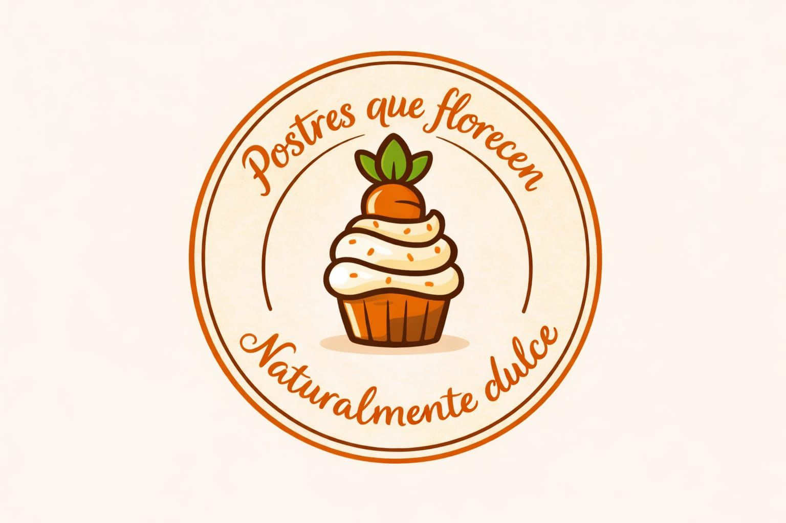
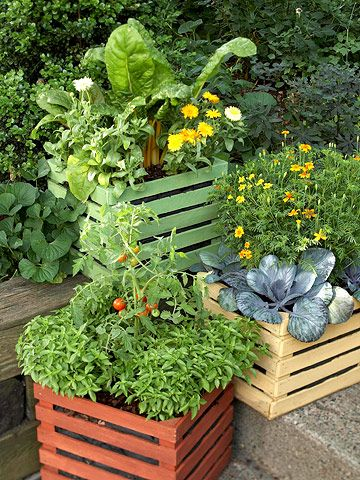
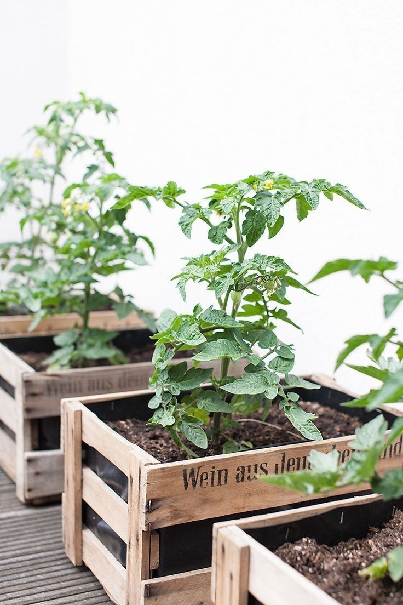
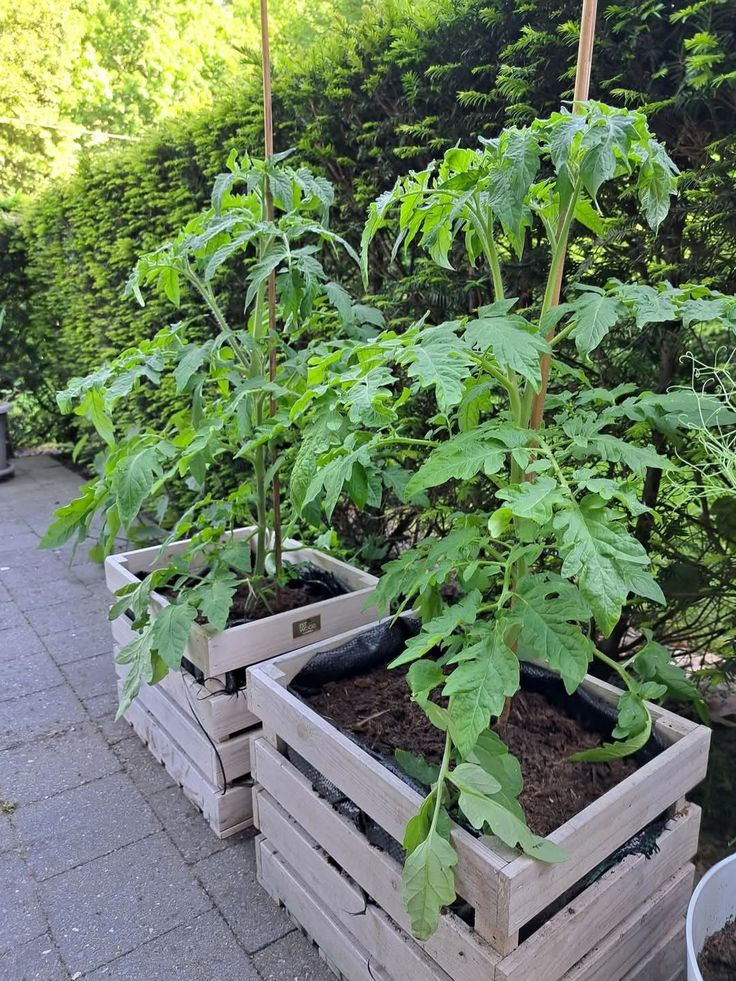
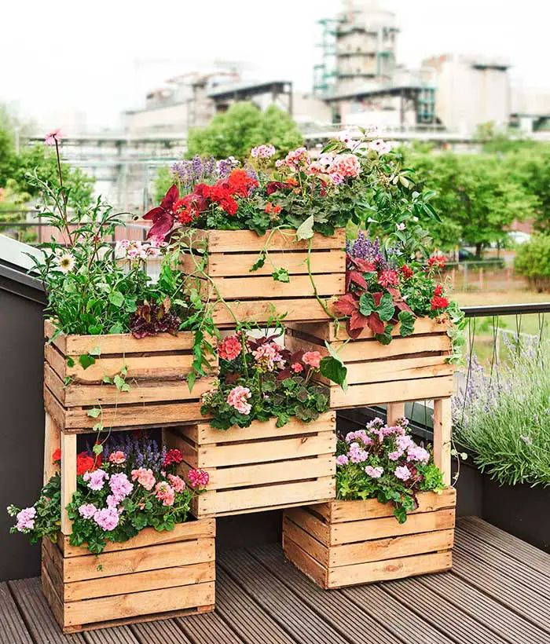
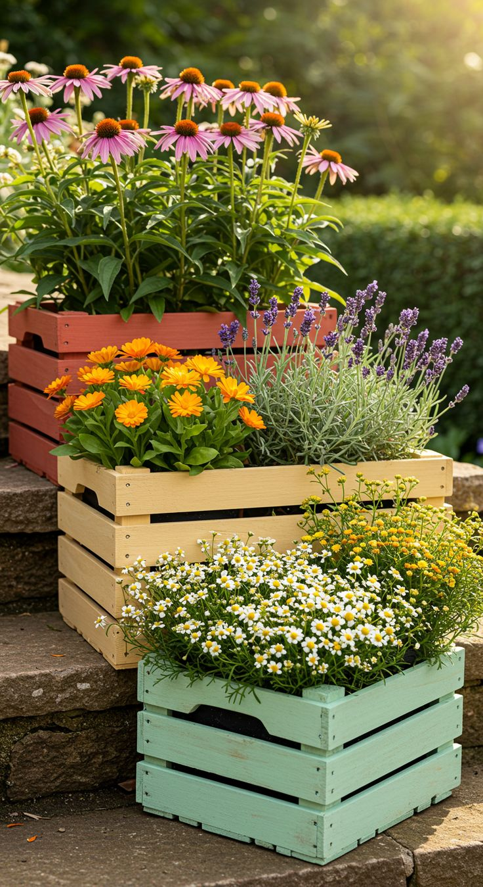
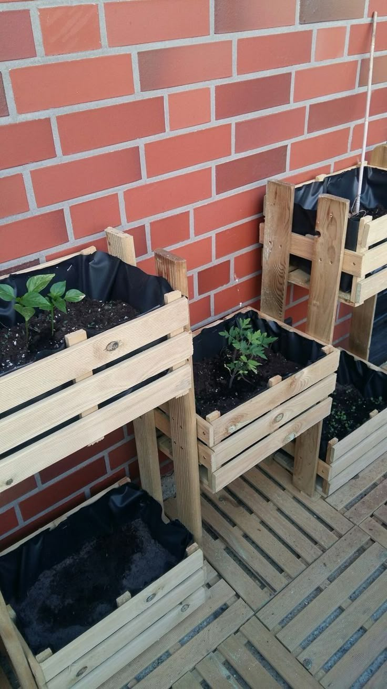

Su diseño es principalmente rectangular o cuadrado, formas que facilitan su colocación y organización en cualquier espacio. La altura suele estar entre los 20 y los 40 centímetros, medida suficiente para que las raíces de la mayoría de las plantas se desarrollen con libertad y obtengan el soporte y los nutrientes que necesitan. El ancho no debe superar el metro con veinte centímetros, ya que de esta forma se puede llegar sin dificultad a la zona central para sembrar, regar o cosechar sin pisar la tierra ni dañar los cultivos. En cuanto al largo, es totalmente variable y se adapta a las medidas disponibles, pudiendo construirse desde pequeñas cajas de medio metro hasta estructuras continuas de varios metros de longitud, según el tamaño de tu terraza, patio o jardín.
Se fabrican con materiales seleccionados por su resistencia, durabilidad y capacidad de soportar el contacto constante con la tierra, el agua y los cambios de temperatura. La madera es la más utilizada por su aspecto natural y cálido, además de aislar muy bien las raíces tanto del calor intenso como del frío extremo; se recomienda usar maderas tratadas para que no se pudran ni se deterioren con la humedad, evitando aquellas que hayan sido procesadas con productos tóxicos que puedan pasar a los alimentos. El plástico rígido es una opción económica, ligera, muy fácil de limpiar y que no sufre daños por el agua, aunque puede calentarse bastante si recibe el sol directo durante muchas horas. El metal es muy resistente y firme, pero necesita un tratamiento especial para evitar la oxidación y es conveniente forrar su interior, ya que transmite rápidamente las temperaturas del exterior. El cemento o el ladrillo son ideales si quieres una estructura fija y permanente, aunque son muy pesados y retienen mucho el frío o el calor según la estación del año.
Pueden colocarse directamente sobre el suelo, lo que resulta práctico si tienes terreno natural o espacios amplios, o construirse con patas para quedar elevados a una altura cómoda, generalmente entre 60 y 90 centímetros del suelo. Esta última opción es muy valoradaporque evita que se tenga que agachar, inclinar o arrodillar para realizar las tareas de cuidado, lo que protege la espalda, las rodillas y las articulaciones, haciendo que el trabajo en el huerto sea mucho más agradable y accesible para personas de todas las edades o con dificultades de movilidad. Además, al estar separados del suelo, se mantienen más limpios y es más fácil limpiar el espacio que hay alrededor.
Una de sus mayores ventajas es que tú decides qué tipo de tierra o sustrato vas a utilizar, por lo que puedes preparar una mezcla rica en nutrientes, con buen drenaje y aireación, adaptada exactamente a lo que necesitan las plantas que vas a sembrar, evitando así problemas que se presentan al cultivar directamente en el suelo, como tierras muy compactas, pobres, llenas de piedras o contaminadas. Al tener mayor volumen de tierra que las macetas individuales, retienen mucho mejor la humedad y los nutrientes, por lo que el agua y los abonos se mantienen disponibles durante más tiempo para las raíces, reduciendo la frecuencia de riego y de fertilización. También permiten sembrar varias especies juntas y organizarlas de forma estratégica, agrupando las que requieren las mismas condiciones de luz, agua y cuidado, o combinando plantas que se benefician mutuamente para crecer más sanas y fuertes.
Las paredes laterales de la estructura cumplen una función protectora muy importante: resguardan la tierra del impacto directo de la lluvia, que podría arrastrarla o compactarla, y de la acción del viento, que podría secarla demasiado o esparcir semillas de malas hierbas. También actúan como una barrera que limita el crecimiento de plantas no deseadas, facilitando mucho el mantenimiento y reduciendo el tiempo que se tiene que dedicar a limpiar el cultivo. Cuando se colocan elevados, crean una barrera física que aleja a muchas plagas y animales dañinos que viven en el suelo, como caracoles, babosas, hormigas o insectos pequeños, evitando que lleguen a las hojas, los tallos o las raíces y dañen tu cosecha.
Son sistemas de cultivo muy flexibles que se adaptan a cualquier tipo de espacio, ya sea un jardín amplio, un patio pequeño, una terraza o incluso un balcón, y se pueden instalar sobre cualquier superficie, como tierra natural, césped, cemento, baldosas o madera, lugares donde no sería posible sembrar directamente. Tienen un aspecto ordenado y cuidado, por lo que además de servir para producir alimentos sanos y frescos, funcionan como un elemento decorativo que embellece y da vida a los espacios exteriores de la casa. Son aptos para cultivar una gran variedad de especies: hortalizas de hoja, de raíz y de fruto, hierbas aromáticas, plantas medicinales y flores. Su única desventaja práctica es que, una vez que se han llenado de tierra y se han ubicado, adquieren mucho peso y se vuelven difíciles de mover, por lo que es importante elegir con atención el lugar donde van a instalarse desde el principio.
Ricardo Márquez Flores - Jesús Amador Romero Miranda
Tercer Grado - Grupo II
Escuela Preparatoria Oficial Núm. 46
San Bartolo Morelos, México, mayo 2026